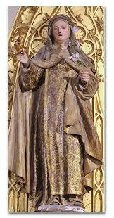

“COMPETENTE NO AMOR A DEUS”
O SEGREDO DA SANTIDADE
Uma norma que a Igreja proclama para o cristão ser um Santo: “Amarás o SENHOR, teu DEUS, com todo o teu coração, com toda a tua alma e com toda a tua mente... Amarás teu próximo como a ti mesmo”. (Mt 22, 37-39). Porque nos Santos deve existir um reflexo da infinita e inesgotável santidade de DEUS.
Desde a infância Ana Maria Redi mostrou-se reservada... Na casa de Arezzo, no meio de tantos irmãos barulhentos em suas distrações, ela preferia ocultar-se no seu quarto, permanecer em orações, e feliz rezava amorosamente, unindo o seu coração a DEUS. Mas é necessário esclarecer: Ana Maria não era um espírito frio, incapaz de afeto, indiferente aos seus irmãos e as pessoas em geral. Ela não gostava e era indiferente a aquilo que se denomina de exigências da vida social, porque o seu coração já estava totalmente dirigido à procura e ao Amor de DEUS. Aos cinco anos de idade ela “começou a satisfazer ao preceito máximo de amar a DEUS sobre todas as coisas”. Desde então, o Amor de DEUS e o desejo de se dar totalmente a ELE foram sempre crescendo em sua alma, com tendência á vida religiosa, retirada e escondida. Não se tratava de se esconder dos deveres cotidianos. Se a mãe a chamasse, ela estava imediatamente presente: saia do quarto e cumpria com prazer e eficiência o pedido da mãe, e depois, voltava imediatamente para o seu retiro juntinho dos Santos.
Quando frequentava o educandário de Santa Apolônia, tomou gradualmente consciência de sua vocação e seu cuidado pessoal em ser desconhecida do mundo. Não queria e nem desejava permanecer em evidência. A alma guiada pela luz do ESPÍRITO SANTO compreende o profundo e insubstituível valor da vida humilde e escondida, vida em total dedicação a DEUS. A solidão é o seu consolo. O seu linguajar é falar de DEUS. Por isso, só quem usa essa linguagem as entende e é por elas entendido. Por que esta solidão é ardente e fecunda em seus objetivos. Ela dizia as outras Irmãs: “Minhas Irmãs em Cristo, ajudai-me a suplicar a DEUS: a conversão dos pecadores, a santificação do clero, e muito mais”... Afinal, com este objetivo o SENHOR nos ajuntou no Carmelo.
Sua linha de conduta era invariável, sempre exercitando a solidão, á oração, á mortificação, e o seu desejo de estar só com DEUS. E na verdade, era exatamente isso que a Regra do Carmelo impõe. Entretanto, mesmo vivendo em comum com as outras Irmãs, com plena dedicação e total caridade a serviço de todos, sob a direção das superioras, ela soube, no fundo de seu coração, viver a sós com o seu SENHOR, reservando a ELE, o dom total de si mesma.
Esse escondimento a Irmã Teresa Margarida exercitava com amor e personalidade, “cobrindo com as cinzas da santa humildade”, os dotes naturais da nobreza, da sua cultura e inteligência pessoal, envolvendo no mais secreto e respeitoso silêncio, os dons que DEUS lhe deu. Nunca falava de seu amado pai; de seu conhecimento de Latim nunca fez exibição, e só usava para citações Bíblicas. Com grande espírito de caridade se tornava delicadíssima para responder a curiosidade de alguém com perguntas indiscretas. Chegava inclusive a qualificar suas abstrações: como esquisitices, distrações, ou negligências. A Irmã tinha o magnífico exemplo de Santa Teresa de Jesus que expressava a verdade ao dizer: “O verdadeiro Amor a DEUS sempre se faz conhecer, e tanto mais se manifesta quanto mais se procura dissimulá-lo”. Assim, sua vida religiosa decorreu no caminho da observância tão perfeita, e aparentemente foi tão simples e comum, que suas virtudes foram consideradas frutos natural do seu temperamento. Mas ela tinha um dom que era especialmente reservado exclusivamente a DEUS, que foi o sofrimento. “Padecer tudo quanto DEUS houvesse disposto, sempre em altíssimo silêncio”. “Abnegar-se de verdade, no interior e no exterior, entregando-se consciente ao padecimento por CRISTO. Porque o aperfeiçoamento só se encontra imitando o SENHOR que é o Caminho, a Verdade e a Vida, e ninguém chega ao PAI senão por ELE”.
A Irmã em harmonia com o espírito da sua Ordem Religiosa orientou a sua existência de ocultamento segundo o exemplo do Verbo Encarnado. A característica da sua vida está fundamentada na Santa Humanidade de JESUS.

A Irmã Ana Maria cultivou uma “obediência sincera e pronta” , atendendo no mesmo instante, sem desculpas e sem apelos. A obediência reinava em grau excelente, mesmo fazendo arrumações, limpando os locais mais humildes da casa, realizando todos os diversos tipos de serviços, como: varrer o galinheiro durante o recreio; fechar-se na cela de alguma Irmã enferma para lhe fazer companhia; substituir Irmãs nos trabalhos mais cansativos; e muitos outros atos de humildade realizados com plena obediência. Esta virtude se consuma em sua plenitude num imenso sacrifício da vida religiosa. Isto porque, os outros dois votos, os bens pessoais e a pessoa física em si, que imolam a DEUS aquilo que possuímos: os bens e pessoa física, o voto de obediência sacrifica aquilo que se é: com a imolação da vontade e da razão, dons preciosos que devolve a DEUS pela renúncia desse uso pessoal, o “bem” que ELE o SENHOR quis que fosse característico do ser humano: “a liberdade”. Por essa razão, o sacrifício da obediência supera os outros votos e faz da vida religiosa, segundo São Tomás de Aquino, um perfeito e continuo holocausto. E a Irmã Teresa Margarida buscava sempre melhorar muito mais... Ela rezava para JESUS dizendo: “Hei de imitar-VOS nas virtudes que tanto agradam ao VOSSO amabilíssimo CORAÇÃO, ou seja: humildade, mansidão, obediência”.
VISITA AO SANTUÁRIO DO MONTE ALVERNE
A visita a aqueles sagrados lugares habitados por São Francisco de Assis ficou indelevelmente gravado em seu coração, pois ela tinha uma devoção pessoal pelo Santo. E na verdade, foi uma verdadeira peregrinação de devoção e penitência. Porque em todos os locais ela se preocupava interiormente, em recordar a grandeza da espiritualidade de São Francisco de Assis, e assim, com orações e sacrifícios tributar-lhe o carinho do seu respeito e admiração.
A PENITÊNCIA
Sem dúvida, a Penitência tem também um valor expressivo, pois considerando que a obediência e a humildade realizam no plano da vontade, uma total abnegação de si mesmo, a Penitência se nos apresenta como uma Virtude Complementar. Mas ela tem também o seu grande valor intrínseco, pois atua como meio de mortificação, lembrando-nos as dores dos flagelos e da crucificação de JESUS no caminho da Redenção.
E assim, para se entender corretamente a prática da mortificação da Irmã Teresa Margarida, que a executou em grau maior de intensidade e generosidade, aos pés da Cruz, verdadeiramente se torna prova de amor, por fazer dos seus sofrimentos uma adesão continua da sua alma e de sua vontade, ao SENHOR JESUS.
Sendo ela verdadeiramente devota da Paixão de JESUS, cujo relato ela escutava desde mais criança, sentia uma inexprimível compaixão, de tão intensa, ao contemplar os sofrimentos, as dilacerações, injúrias e a abominável morte dolorosíssima do SALVADOR DIVINO, que as lágrimas em quantidade desciam dos seus olhos e molhavam a sua jovem face.
Assim, ao SENHOR DEUS CRUCIFICADO, a Irmã Teresa Margarida se entregava pela total abnegação, onde encontrava com alegria, o DEUS DA VIDA, desde a sua juventude.
JESUS SACRAMENTADO
Olhando o caminho amoroso da Irmã Teresa que lhe dava forças e alimentava à sua abnegação generosa, observamos que fundamentalmente ela estava concentrada em JESUS, porque verdadeiramente é por NOSSO SENHOR que nos vêm todos os bens. Santa Teresa D’Ávila ao organizar os Mosteiros Carmelitas Descalços sentindo essa realidade, centralizou a vida de seus Mosteiros em JESUS SACRAMENTADO, seja para vida de oração em grupo e mesmo para as práticas pessoais das Irmãs, incluindo o exame de consciência. E para dar mais autenticidade a sua predileção, ela sempre reunia as Irmãs no Coro, diante do SANTÍSSIMO SACRAMENTO. Também, do mesmo modo, dotada em alto grau espiritual, a Irmã Teresa Margarida sobressaiu por uma carinhosa e profunda piedade eucarística, revelando ser de fato, uma das filhas de Santa Teresa D’Ávila. “JESUS alimentava a sua vida interior, era o alimento da sua alma. Depois da Santa Comunhão, mergulhava NELE, e tanto ficava concentrada que era preciso uma Irmã sacudi-la, para avisá-la de que era hora de sair do Coro.”
O SAGRADO CORAÇÃO DE JESUS
A Devoção ao “SAGRADO CORAÇÃO” era uma novidade naqueles tempos. Mas não para Ana Maria Redi. Seu pai contava que a filha desde pouca idade nutria imensa e carinhosa devoção ao “SAGRADO CORAÇÃO DE JESUS”. Frei Ildefonso que dava assistência espiritual ao Mosteiro confirmou: “Foi uma devoção singularíssima e gratíssima da Serva de DEUS para o SAGRADO CORAÇÃO DE JESUS, devoção que aprendeu dos bons livros, quando ainda estava no século, e trouxe para a vida religiosa”.
No seu depoimento perante o inquérito no processo religioso, Frei Ildefonso confirmou: “Ela pediu ao seu pai, por sugestão de Frei Colombino, o livro sobre a Vida da Irmã Margarida Maria de Alacoque, e leu com minha aprovação e com grande contentamento da parte dela, porque lhe causou um magnífico proveito espiritual, afervorando a sua Devoção cada vez mais ao “SAGRADO CORAÇÃO DE JESUS”.
A MÃE DE DEUS E NOSSA MÃE
No Mosteiro de Santa Apolônia não era difícil localizar o quarto da Irmã Teresa Margarida: nele existia um caprichado altarzinho de NOSSA SENHORA, que o distinguia dos demais. O Padre Pellegrini menciona as “homenagens particulares” que a Irmã diariamente honrava a VIRGEM MARIA, inclusive levando as suas “próprias Irmãs colegas” a rezar diante do altar. Uma verdade afirmada por diversos Santos se materializava na Irmã Margarida: “A Devoção Mariana tem vida mais profunda e intensa onde for mais concreto e bem praticado o amor por "SEU DIVINO FILHO”.
Por certo, foi à piedade cristã de seu pai que a iniciou na reza do Terço de NOSSA SENHORA, e que ela permaneceu sempre fidelíssima, em qualquer circunstância. As Irmãs, suas colegas de Mosteiro, recordaram que na primeira noite de sua chegada, aproximando-se a hora do repouso, ela lembrou a sua Madre-Mestra que ainda não tinha rezado o Santo Rosário. Nem a viagem cansativa para uma criança de 9 anos, nem o sofrimento pela separação de seu querido pai, foram suficientes para fazê-la se esquecer do filial dever diário para com a “SANTÍSSIMA VIRGEM MARIA”, sua e nossa Amada Mãe.
A ORAÇÃO
Segundo a concepção mais profunda do Carmelo, a oração é o grande e mais perfeito meio pelo qual a alma se coloca em contato com DEUS, estabelecendo com ELE, uma preciosa relação que se torna sempre mais íntima e carinhosa, na medida das boas disposições fervorosas da própria alma que busca e da preciosa e abrasadora atração de DEUS sobre ela. “Santa Teresa D’Ávila, a grande reformadora do Carmelo, ensinou as suas filhas que na oração não se trata de muito pensar, mas de muito amar”.
AMOR A DEUS
Chegamos nessa altura do resumo da vida de Santa Teresa Benedita do Coração de Jesus, com uma convicção clara e insofismável: “A SANTA caminhava firme na direção de uma finalidade suprema: Amar a DEUS com todas as suas forças e dar-LHE o seu maior amor, em troca do imenso AMOR que recebia DELE”. E pode-se afirmar: a Irmã Teresa Margarida, ao longo da sua existência, conseguiu manifestar a DEUS, a maior e mais profunda intensidade do seu amor, em troca do maravilhoso e indescritível Amor carinhoso que recebia de NOSSO SENHOR. E assim, o amor ascético, que é uma procura ativa do verdadeiro e puro amor, fará com que a Irmã Teresa Benedita voe ao encontro de DEUS, para ser invadida e abrasada por ELE, fazendo com que DEUS seja o único SENHOR da sua pessoa, absorvendo toda a sua vontade, numa plena e almejada maturidade da vida “em DEUS”.
Num domingo em 1767, em orações no Coro com as demais Irmãs, na hora da Tercia ela pronunciou com dignidade e respeito em alta voz: “Deus charitas est, et qui Manet in charitate in Deo Manet et Deus in eo”. (DEUS é amor, e quem permanece no amor permanece em DEUS e DEUS nele)(1 Jo 4, 16). De repente, uma onda de amor e de luz Divina invadiu o coração e a mente da Irmã Teresa Margarida. DEUS NOSSO SENHOR se manifestava a ela, fazendo-a experimentar naquele momento, a realidade e a força do SEU AMOR INFINITO. Terminada as orações, as Irmãs em silêncio levantaram-se e seguiram para as suas atividades no Mosteiro. A Irmã Teresa com o rosto vermelho com visível emoção continuava a repetir em voz baixa, mas audível, para quem estivesse próximo: “Deus charitas est”! (DEUS é AMOR!).Todas as Irmãs perceberam aquele comportamento, embora bonito e comovente, estranho por parte dela, por que se prolongou por vários dias. A Madre do Mosteiro também percebeu, e viu que aquela manifestação, embora uma atitude estranha e permanente fosse à realidade de uma jubilosa manifestação da Irmã Teresa, que se prolongou por dois a três dias, revelando uma imensa felicidade em seu coração. E na sua alegria interior a Irmã Teresa não pensou que alguém a estivesse escutando. A Madre e as Irmãs compreenderam e ficaram admiradas com a grandeza de seu amor a DEUS.
A Irmã responsável pela exatidão dos trabalhos das Religiosas no Mosteiro, em suas observações, também notou uma notável mudança de conduta na Irmã Teresa, com o aumento da dedicação no serviço as próprias Irmãs, suas companheiras, se sacrificando ainda mais (se fosse possível) em favor da fraterna união no Mosteiro. Era como se existisse uma impaciência do seu desejo de amar e o seu próprio sentimento de impotência em realizá-lo, que a estimulava a procurar todos os meios para testemunhar a DEUS sua sede de amor, realizando uma penitência intensa e escondida, numa dedicada caridade. Essa oferenda era evidentemente haurida no espírito da sua devoção ao SAGRADO CORAÇÃO DE JESUS.